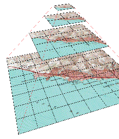

make_oi is part of the tsmApi library tools archive. You can download the latest tsmUtils archive for various platforms from the tsmApi Download Page. Using make_oi, you can create an OI pyramid from raw source imagery. Currently we only support raw RGB bitmaps and PPM/PGM format images. Please refer to the make_oi Manual Page for information on how to use this utility. As an example, the following command-line is used to create an OI dataset called laguna_beach.oi from the source 2.4384 m resolution PPM image, and supplying the UTM coordinate of the lower-left corner of the image. The geoname is a string that is used to associate an OI pyramid with a DEM pyramid.
make_oi ~magic/TileSets/Pyramids/laguna_beach \
laguna_beach.ca.ppm \
-ll_e 417945 -ll_n 3708247 -zone 11 \
-startres 2.4384 -geoname "Laguna Beach"
As an example, the following command-line is used to create a DEM dataset called laguna_beach.dem from the source 78.0288 m resolution raw (32-bit) elevation bitmap, which has 160 x 198 postings, and supplying the UTM coordinate of the lower-left corner of the image. Note that we specify the same geoname for the DEM as in the OI example above. This lets TerraVision know that these datasets should be treated as an (imagery, elevation) pair.
make_dem ~magic/TileSets/Pyramids/laguna_beach \
laguna_beach.ca_dem.raw \
-width 160 -height 198 \
-ll_e 417945 -ll_n 3708247 -zone 11 \
-startres 78.0288 -geoname "Laguna Beach"
TerraVision can overlay VRML models on top of the terrain, e.g. buildings, atmospheric simulations, roads, etc. In order to create a VRML model that TerraVision can use, you need to create a directory with a .model extension. Although it is not necessary, it is good practice to use the same root name as the dataset.
Inside this directory there must be a file called model.wrl. This is the VRML model for the particular feature you want to represent. This file can Inline other files as required.
In order to tell TerraVision where to locate this VRML model in the world, you need to supply a Metadata node inside the model.wrl file. This Metadata node can also be used to provide information such as author, copyright, etc. For example,
#VRML V2.0 utf8
PROTO Metadata [ exposedField MFString info "" ] { Group{} }
DEF METADATA Metadata { info [
"name: Clear Air Turbulence"
"author: Don Middleton, NCAR"
"y-axis-up: no"
"lcs-offset: 123676 42073 0"
"geoname: Colorado"
"description: Clear Air Turbulence isosurfaces over the Rockies"
] }
....
The y-axis-up field specifies whether the data has been generated with the VRML97 standard of +Y = up, or if the more common computer graphic system of +Z = up has been used.
The geoname field is used to associate this model with a particular OI dataset - it should match the geo-name field in the OI's tile.tspec file. This field is mandatory.
TerraVision has a Map Viewer which lets you view digital maps and treat these as active maps. This means that you can click on the map and your 3-D (or 2-D) viewer will move to that location. Also, you can overlay the view frustum or flight path from your 3-D viewer on the map.
In order to associate a map image with a dataset you need to create a directory with a .map extension. Although it is not necessary, it is good practice to use the same root name as the dataset.
Inside this directory you need two files: one for the image data and one for the metadata about the geographic extent of the map image. The image can be in PPM, GIF, or JFIF/JPEG format, and can be given any name. The metadata file must be called map.info. The map.info file contains the filename of the image as well as the (u,v) coordinate of the lower-left and upper-right corner of the image. (u,v) are specified in the same coordinate system as the OI and DEM datasets that the map is being associated with. For example,
This map.info file specifies that there is a file called fort-irwin-utm.ppm in the same directory, and that it's lower-left UTM coordinate is (520000, 3880000), and it's upper-right UTM coordinate is (570000, 3920000). The map-geoname field is used to associate this map with a particular OI dataset - it should match the geo-name field in the OI's tile.tspec file.# ---- map.tspec ---- map-name "fort-irwin-utm.ppm" map-geoname "Ft Irwin (2scene)" map-min-u 520000 map-max-u 570000 map-min-v 3880000 map-max-v 3920000